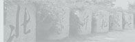

1．大学本科毕业后有3年（到2016年9月1日）或3年以上工作经验；或已获硕士学位或博士学位并有2年（到2016年9月 1日）或2年以上工作经验；大学专科毕业后有5年（到2016年9月1日）或5年以上工作经验，须以同等学力身份报考。
2．除中英党校承认教育学院本科学历外，其余的党校本科学历不能报考。
3．在境外获得的学历证书须通过教育部留学服务中心的认证。
4．身体健康状况符合《普通高等学校招生体验工作指导意见》的体检要求。
5．我校MBA不招收少数民族骨干计划的考生。
①.面试形式：个人面试，时间约为30分钟。
②.面试内容：综合素质测评（个人面试）、英语口语、英语听力（笔试，单选题形式）、时政论文。
（根据当前经济社会热点，撰写与时政、经济或管理类相关并结合自身实际工作情况的论文一篇，自拟题目，字数不少于2000字。 论文纸张自定，提前写好，面试当天提交手写纸质版，后送专门评审组审阅评分，切勿抄写!）
(5).中文简历3份（A4纸1张）各粘贴一寸免冠彩色照片。

(4).工作年限证明1份 （工作年限证明备注：由本单位出具的加盖公章的工作年限证明 或 工作年限相加符合报考 条件的一份或多份劳动合同 或 符合报考条件要求的工作年限的个税证明 或 个人创业者可携带营业执照原件及复 印件 或 自由职业者请撰写个人工作经历，并提供每段工作经历的证明联系人姓名及联系方式。）